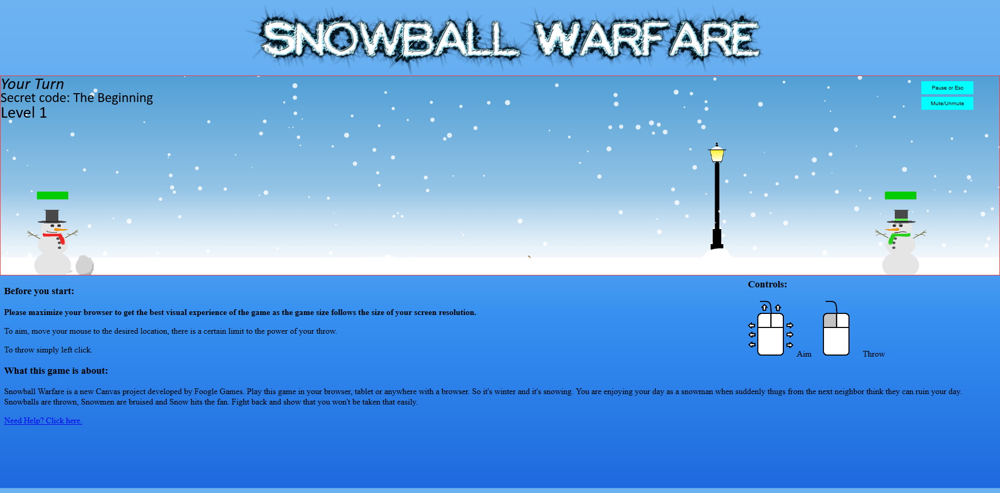
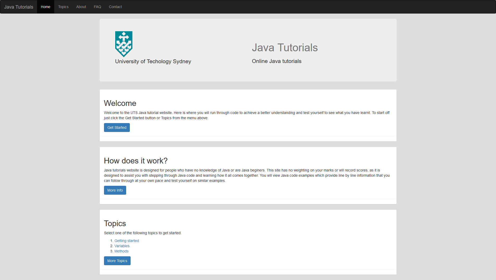
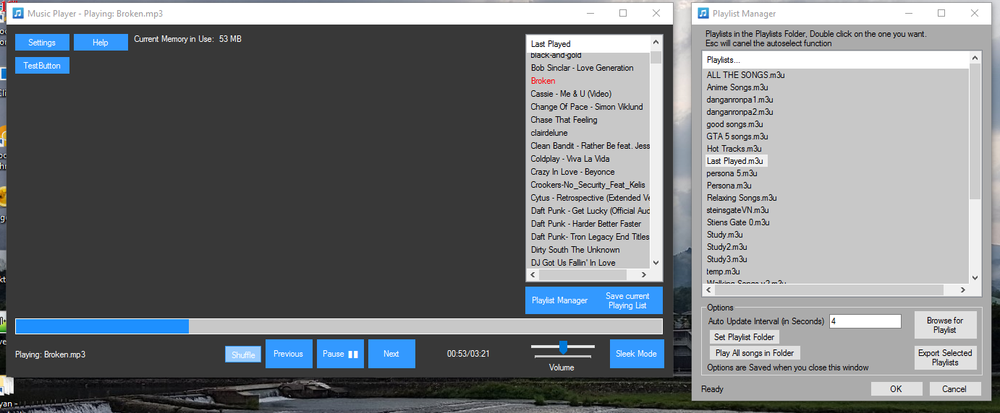
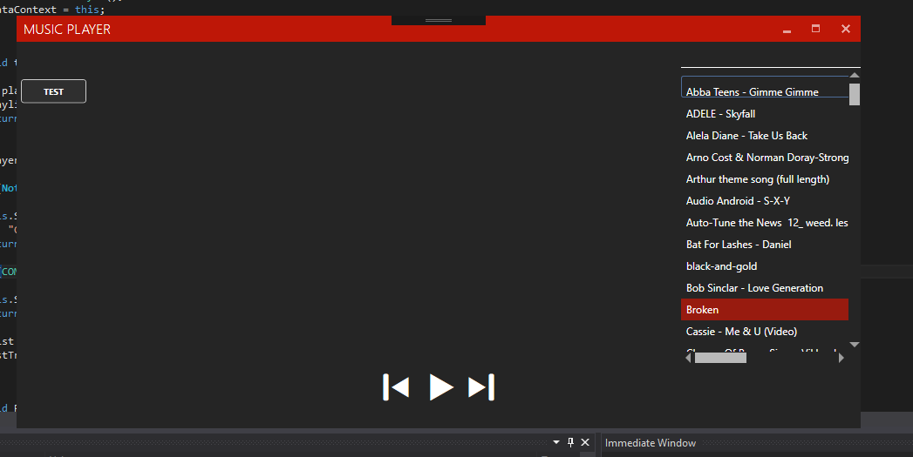
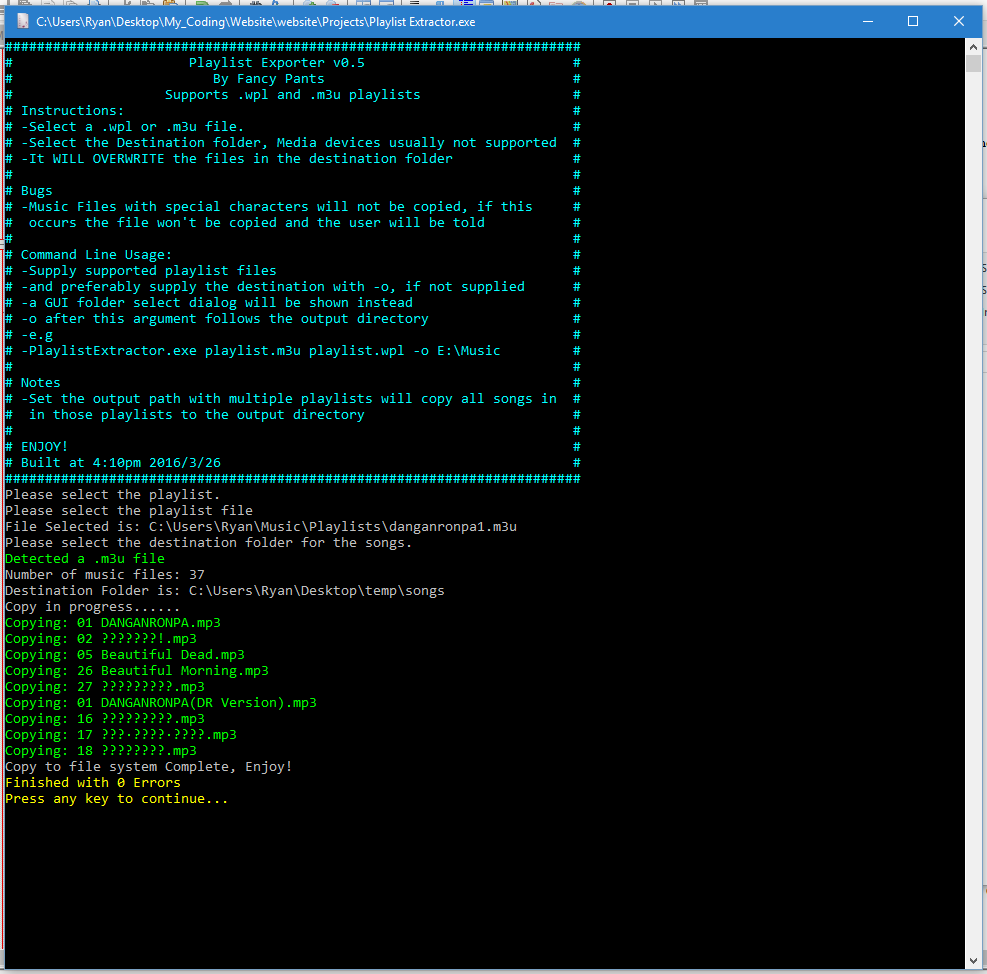
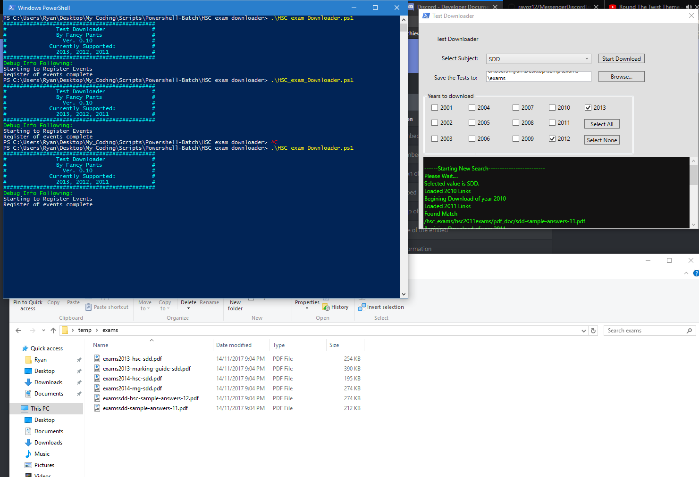

Snowball Warfare
A game I made for my major project in Year 12 Software Design and Development. It was my first foray into programming and it was really fun to make, learning all the in and outs of the logic you had to use to implement everything. It is implemented completely in JavaScript on the client side, with canvas the HTML5 graphics API. It's a physics based game that's used with your mouse to throw projectiles.
Anyway enough talking here's the live view: Snowball warfare
Java Learner
During my time at university I undertook an extra-curricular activity in my first year called software development studio. This involved me being placed in a team and developing a project for a client. Our client was a teacher who wanted to use the accessibility of the Internet to his advantage to allow students from any platform connect and test their Java skills.
Here's the live view:Live View
Downloads:
Snowball Warfare (zip)
The live version can be viewed above, this is just a zip file to play on your local computer and to view the source at your discretion.
JavaLearner (zip not available)
For a subject at UTS I worked with a team to make a web site that students could use to learn Java. It also acted as testing platform to better engage the students and better their skill. Our team decide to implement it in a flexible way to enable the service to work with any programming language. My role in the team was mostly to program the JavaScript client side to interact the user.
Music Player
A small music player with hotkey support Built using C# and Winform with the Window Media PLayer library. This music player also puts a focus on playlists, It is able to order tracks and place them groups for better organisation.
A rewrite is in progress using WPF and the NAudio library.
Playlist Extractor
This extracts the music files saved in playlists. Was also a learning experience for me making my first C# program. This currently works on .wpl (used by windows media player) and .m3u (with relative paths) playlists.
AutoHotKey music hotkey script
This for people with keyboards that don't have media keys. It emulates those media keys via AHK. There is also a Media Player Classic Home Cinema version that sends directly to MPCHC, which means it's more reliable.
Special thanks for the library functions from specter333: https://autohotkey.com/board/topic/73687-media-player-classic-home-cinema-function-libraries/
Link which includes the normal and MPCHC edition AHK scripts and exes
HSC Exam Downloader
While I can't vouch if it still works now as it was made in 2014, it has some interesting source and a GUI for a powershell script. As far as I remember most of it was implemented, but the board of studies changed URL formats throughout the years and that might break this.
Checkout my Github profile for some more projects!
Including some I've worked with teammates on.
Misc:
Codiad (Web IDE hosted on this website)
File manager (Account is required. Contact the webmaster for details)
a divergence meter to display custom values. The divergence meter is orginally from stiens;gate
About Me:
I'm a student currently studying towards a Bachelor of Engineering (Honours) Diploma in Professional Engineering Practice (ICT Engineering, Software sub-major) at the University of Technology, Sydney. I'm always looking forward to new challenges and learning experience as a student so that I better cope in the real world and to better myself.
Contact Details:
Ryan Pereira,
Email: ryanpereira@ryanjpereira.com
Github profile: https://github.com/rayoz12
LinkedIn: https://www.linkedin.com/in/ryan-pereira-a7a030126
Contact the webmaster: webmaster@ryanjpereira.com